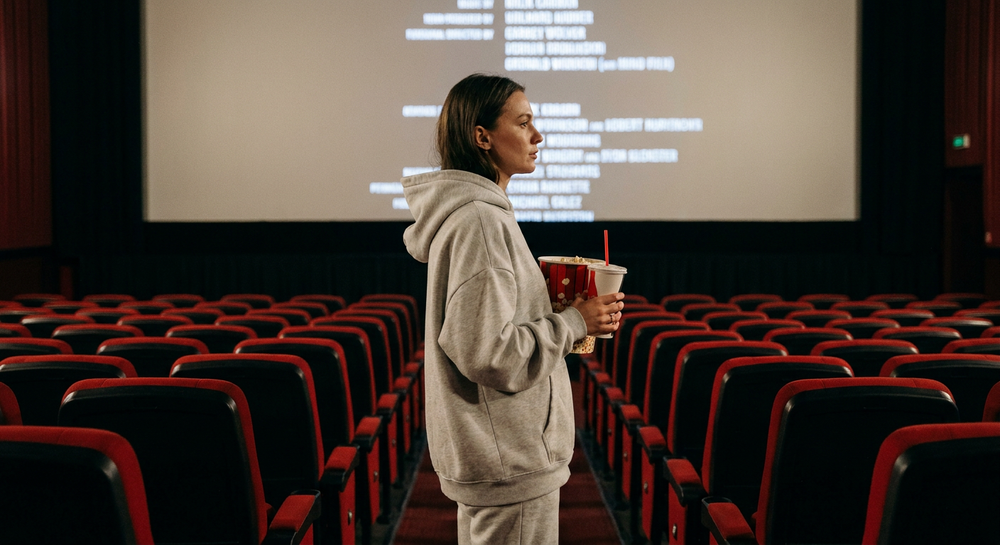
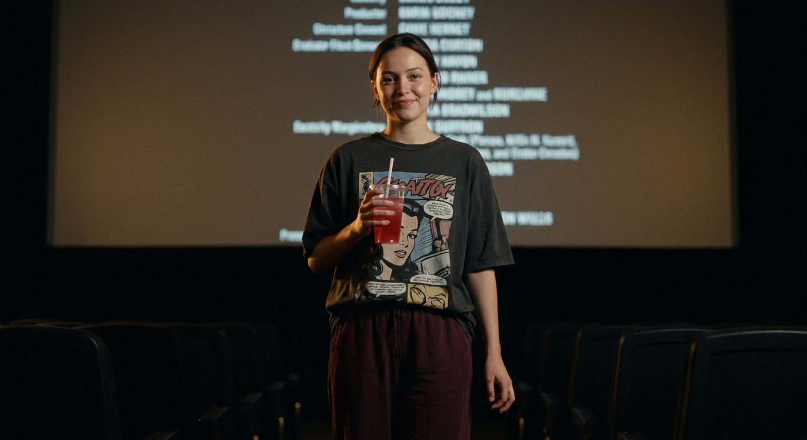
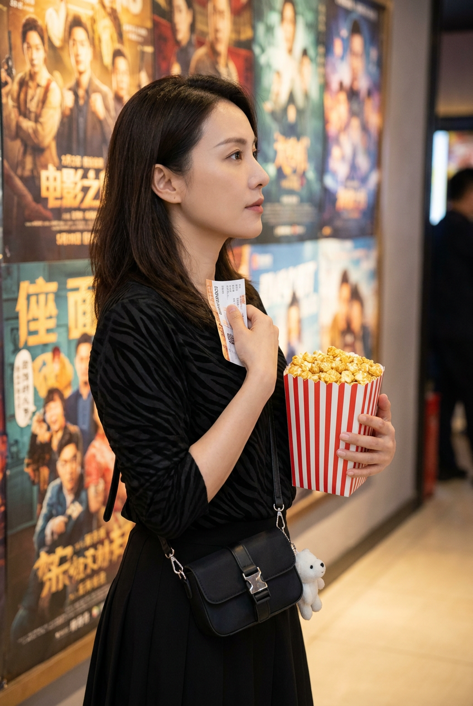
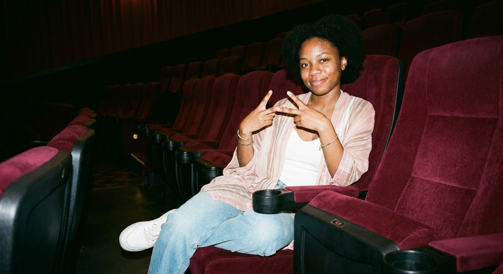
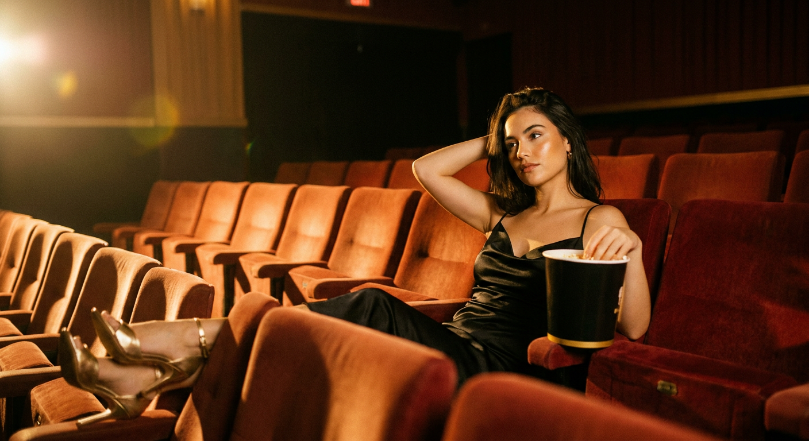
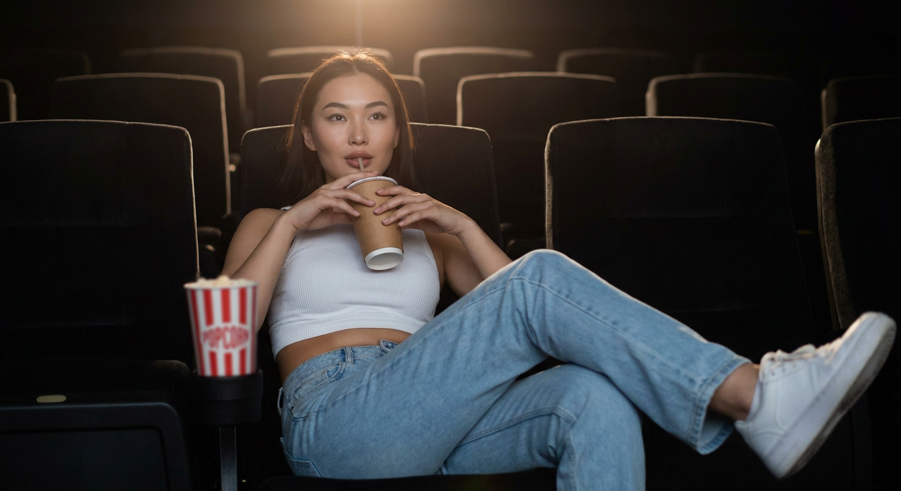
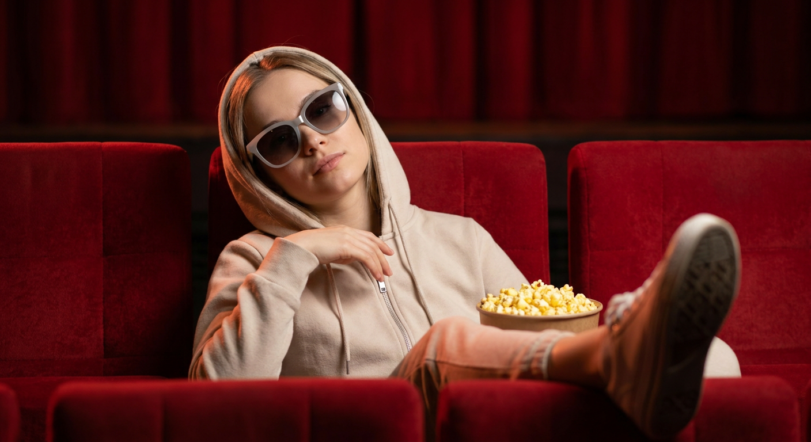
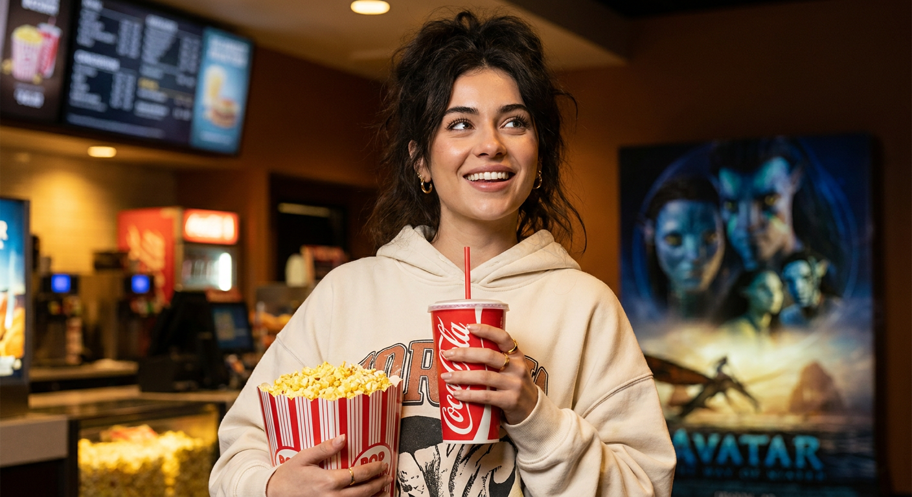
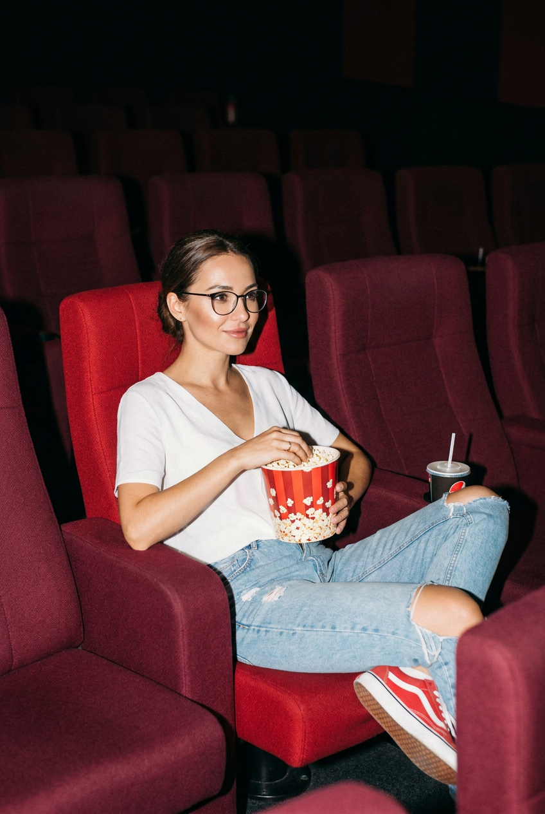
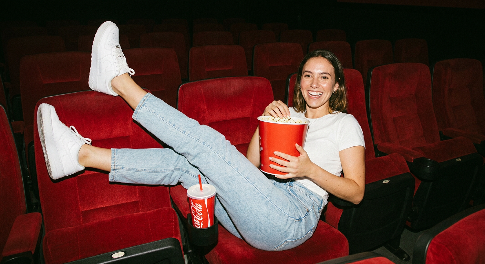

ИИ-фото в кинотеатре: 10 промптов для нейросети

Кадр в кинотеатре легко превращается в случайное селфи: кресла теряются в темноте, руки выглядят неестественно, а лицо перестаёт быть похожим на референс. Генерация помогает заранее задать композицию, одежду, свет и настроение снимка.
В подборке — 10 сценариев для разных сюжетов: прогулка между рядами, портрет у экрана, попкорн и билетики, расслабленная поза в кресле, вспышка, очки и уютный кадр в лобби.
Как сгенерировать такое фото: пошагово
Нужен снимок анфас при ровном свете, лицо в кадре целиком, без тёмных очков и головных уборов. Разрешение от 1000 пикселей по короткой стороне. Чем чётче исходник, тем точнее модель повторит черты.
Выберите сценарий ниже и нажмите «Копировать» — текст уйдёт в буфер целиком, вместе с командой сохранения внешности. Эта команда стоит первой строкой и отвечает за то, чтобы на выходе было ваше лицо, а не случайное.
Кнопка «Сгенерировать» рядом с каждым промптом открывает модель в новой вкладке. Nano Banana Pro работает с референсом лица — в отличие от моделей, которые генерируют портрет с нуля и узнаваемость теряют.
Промпт — в поле ввода, портрет — через загрузку референса. Порядок значения не имеет, но без референса команда сохранения внешности работать не будет: модели нечего сохранять.
Для сторис и ленты берите 9:16, для превью и обложек — 4:3. Первый результат редко идеален: если поза или свет ушли не туда, поправьте соответствующую часть промпта и запустите заново. Обычно хватает двух-трёх итераций.
10 промптов для генерации
1. Монохромный образ в зале
Строго сохранить внешность по загруженному референсу: черты лица, пропорции, мимику и текстуру кожи без изменений. Фотореалистичный кинематографичный кадр внутри тёмного кинотеатра. Вокруг тянутся многочисленные ряды красных мягких кресел с чёрными боковыми деталями и подлокотниками. Между рядами проходят дорожки, перспектива уходит далеко вглубь и формирует длинный коридор. Общий свет приглушённый, зал почти тонет в полумраке. В центре стоит девушка, показанная в полный или почти полный рост, в профиль либо полупрофиль; она смотрит на экран, корпус слегка развёрнут, в руках перед собой держит несколько предметов. На ней объёмный светло-серый пепельный худи с капюшоном: часть капюшона свисает и мягко затеняет лоб. Нижняя часть образа выдержана в том же оттенке — юбка или длинные брюки, монохромный комплект. Ткань плотная, с естественными складками и мягкой фактурой. Съёмка с натуральными пропорциями тела, реалистичной глубиной резкости и мягким киношным контрастом.
2. Портрет у большого экрана

Строго сохранить внешность по загруженному референсу: черты лица, пропорции, мимику и текстуру кожи без изменений. Сделай реалистичную фотографию девушки в затемнённом кинозале. Она стоит на проходе перед рядами кресел, а за спиной виден большой экран с размытыми строками титров; текст не должен читаться. От проектора на экран и пространство падает мягкое световое пятно. Камера расположена немного ниже уровня глаз, лёгкая нижняя перспектива подчёркивает силуэт. Девушка смотрит чуть в сторону камеры и одновременно вбок, на лице спокойное выражение и едва заметная полуулыбка. Кожа натуральная, без эффекта пластика, макияж сдержанный. На ней тёмно-серая или графитовая футболка оверсайз с крупным комиксным либо постерным принтом, который выглядит как настоящая печать на ткани. Передний план и фон остаются кинематографично мягкими, свет приглушённый, лицо читается естественно. Сохранить реалистичную анатомию, фактуру ткани и пропорции фигуры.
3. Попкорн и билетики

Строго сохранить внешность по загруженному референсу: черты лица, пропорции, мимику и текстуру кожи без изменений. Фотореалистичный кадр в кинотеатре или у стены фойе, украшенной афишами. Девушка стоит в левом или среднем плане боком к камере и смотрит вправо. Ракурс на уровне глаз, поза спокойная, выражение слегка задумчивое, губы расслаблены. В левой руке она держит картонный стакан или ведёрко с попкорном красно-белого цвета, сверху видна горка золотистых зёрен. В правой руке — небольшая бумажная карточка, купон или сложенный буклет, прижатый к груди. Пальцы, кисти и суставы анатомически корректны. На девушке стильный чёрный образ: чёрный верх с характерной фактурой и аккуратными деталями, без лишней яркости. Макияж естественный. Свет мягкий, с лёгким киношным контрастом; афиши и фон не перетягивают внимание на себя. Добавь правдоподобные тени, натуральную текстуру кожи и реалистичную детализацию еды и бумаги.
4. Жест мира в кресле

Строго сохранить внешность по загруженному референсу: черты лица, пропорции, мимику и текстуру кожи без изменений. Фотореалистичная фотография девушки в тёмном кинозале. Она сидит в бордовом бархатном кресле с высокой спинкой, корпус развёрнут к камере и немного откинут назад. На лице мягкая улыбка, взгляд живой и весёлый. Обе руки подняты перед собой, ладони показывают знак мира V; пальцы пропорциональные, без слияний и деформаций. На девушке белый топ без рукавов, поверх свободно лежит лёгкая полупрозрачная накидка в светло-розовую и бежевую полоску. На ногах светло-голубые джинсы и белые кроссовки с хорошо видимыми шнурками. На запястьях тонкие браслеты, на шее деликатная цепочка, волосы распущены и уложены естественно. Вокруг заметны ряды таких же красных и бордовых кресел. Освещение мягкое, зал затемнённый, ткань бархата передаёт глубокий цвет и ворс. Композиция выглядит как живой снимок, а не постановочная рекламная сцена.
5. Золотой свет и кресла

Строго сохранить внешность по загруженному референсу: черты лица, пропорции, мимику и текстуру кожи без изменений. Кинематографичная фотореалистичная сцена в пустом кинотеатре. Сверху и в глубину кадра видны ряды красных и терракотовых мягких кресел с подголовниками; большие промежутки между рядами усиливают ощущение пространства. На переднем плане крупно показаны кресла и подлокотники, а девушка находится справа в средней части изображения. Она сидит или полулежит, расслабленно опустив плечи, одна рука заведена за голову, локоть направлен в сторону. На лице и обивке лежат тёплые жёлто-золотые блики, дальние ряды растворяются в глубоких тенях. Свет напоминает направленный театральный источник или вспышку с тёплым цветным фильтром; холодный teal-оттенок не использовать. Сохрани натуральные черты, реалистичную позу, объём кресел и мягкую глубину резкости. Кадр должен ощущаться как выразительная сцена из фильма, снятая в пустом зале.
6. Напиток в полумраке

Строго сохранить внешность по загруженному референсу: черты лица, пропорции, мимику и текстуру кожи без изменений. Фотореалистичная сцена в камерном тёмном кинотеатре с низкоконтрастным освещением. Полукругом вокруг героини располагаются мягкие кресла, на их подголовниках заметны номера рядов и мест, но цифры остаются слегка размытыми и не превращаются в читаемые надписи. Фон почти полностью тонет в темноте. В центре — девушка в среднем плане, акцент на лице, руках и позе. Она откинулась на спинку, но одновременно чуть наклонилась вперёд; обеими руками держит у рта картонный стакан с напитком. У стакана реалистичная крышка и трубочка, на поверхности напитка появляется небольшой отражающий блик. Ноги расслабленно развернуты в стороны. Свет мягко выделяет лицо, пальцы и стакан, не разрушая атмосферу полумрака. Передай натуральную кожу, корректную анатомию кистей, фактуру ткани кресел и аккуратную глубину резкости без лишних деталей на заднем плане.
7. Очки и мечтательный взгляд

Строго сохранить внешность по загруженному референсу: черты лица, пропорции, мимику и текстуру кожи без изменений. Фотореалистичный кадр в кинотеатре: девушка сидит по центру ряда красных бархатных или тканевых кресел с откидывающимися спинками. Она расслабленно откинулась назад, голова слегка запрокинута, выражение спокойное и мечтательное; глаза скрыты за крупными белыми или светло-серыми солнечными очками. Волосы частично закрывает светлый капюшон куртки или спортивного костюма. На ней светлый худи на молнии, капюшон лежит естественно, на ткани видны аккуратные складки. Одна рука поднята и немного согнута у груди. Одна нога поджата или приподнята, ступня попадает в кадр, часть носка и подошвы видна. На коленях и ногах заметны светлые тёплые оттенки ткани. Рядом на подлокотнике размести небольшой предмет из кинотеатра, например стакан или упаковку снека. Свет мягкий и приглушённый, кресла объёмные, фон уходит в темноту.
8. Мечтательный кадр в лобби

Строго сохранить внешность по загруженному референсу: черты лица, пропорции, мимику и текстуру кожи без изменений. Фотореалистичная фотография в зоне лобби или у стойки кинотеатра. Девушка стоит рядом со столиком, снята по пояс или до середины бедра с уровня глаз и слегка развёрнута в сторону. Она смотрит вверх и немного вбок, выражение радостное, мечтательное. Кожа имеет естественный тон, макияж аккуратный, глаза выразительные и подсвечены тёплым источником. Волосы уложены объёмно. На ушах заметные серьги с золотистым, жемчужным или глянцевым блеском, на пальце кольцо. На девушке свободный молочный или кремовый худи с крупной графикой на груди; рукава собраны у запястий, плотная ткань показывает реальные складки и фактуру. В кадре должны быть мягкие детали интерьера кинотеатра, но без визуального шума. Используй тёплый свет на лице, натуральную глубину резкости и правдоподобные пропорции одежды, украшений и рук.
9. Вспышка и красные кресла

Строго сохранить внешность по загруженному референсу: черты лица, пропорции, мимику и текстуру кожи без изменений. Фотореалистичное кинематографичное фото в современном кинотеатре. В тёмном зале стоят ряды красных и бордовых мягких кресел с объёмной тканевой обивкой; несколько мест свободны, дальний фон почти чёрный и слегка размыт. Девушка сидит в центре на красном кресле, показана в ракурсе три четверти. Она немного откинулась назад, одна нога согнута и подтянута, другая вытянута вдоль кресла; ступня и обувь попадают в нижнюю часть изображения. Взгляд уверенный, направлен прямо в камеру. На лице, руках и еде заметен направленный свет или вспышка, поэтому детали хорошо читаются, хотя общая атмосфера остаётся сценической и приглушённой. Сохрани натуральную кожу, корректную анатомию, реалистичные тени и малую глубину резкости. Композиция должна напоминать редакционный снимок, сделанный в пустом кинозале.
10. Попкорн на соседнем кресле

Строго сохранить внешность по загруженному референсу: черты лица, пропорции, мимику и текстуру кожи без изменений. Фотореалистичное фото девушки в пустом кинотеатре с рядами красных бархатных кресел на заднем плане. Она полулежит в кресле, спина откинута, ноги закинуты на соседнее сиденье. Девушка смотрит прямо в объектив и широко, естественно улыбается. В руках она держит большое красное ведро попкорна двумя руками; в подстаканнике рядом стоит стакан Coca-Cola с крышкой и трубочкой. На ней простая белая футболка, голубые mom jeans и кеды Nike. Волосы распущены, образ casual, макияж минимальный: натуральная кожа и лёгкий румянец. Камера расположена чуть выше уровня глаз, используй прямую накамерную вспышку, жёсткий свет и резкие тени на фоне тёмного зала. Добавь тёплую плёночную цветокоррекцию, лёгкое зерно и атмосферу расслабленного lifestyle-editorial. Кресла остаются пустыми, но сохраняют ощущение уютного личного пространства.
Что важно учесть в этом стиле
Кинотеатр держится на контрасте: лицо и детали одежды должны быть видимыми, а дальние ряды — уходить в тень. Для мягкого портрета подойдут 50–85 мм и диафрагма f/2–2.8, для длинной перспективы рядов — 24–35 мм при f/4. Если нужен эффект вспышки, отдельно укажите жёсткий фронтальный свет, резкую тень и тёмный фон.
Референс лица лучше описывать вместе с естественной мимикой, а позу — через положение корпуса, рук и ног. Для пальцев, стакана, трубочки и попкорна полезно просить реалистичную анатомию и повторять генерацию 3–6 раз, меняя только проблемный фрагмент.
Идеи для вариаций
- Заменить красную обивку на зелёный плюш или синие кресла старого кинотеатра.
- Добавить свет от экрана с холодным голубым оттенком или тёплый свет от бра на стенах.
- Попросить кадр через проход между креслами, отражение в стакане или съёмку с заднего ряда.
- Сменить настроение: ожидание сеанса, смех после фильма, задумчивость на финальных титрах.
- Добавить билет, коробку начос, 3D-очки или плакат без читаемых надписей.
Как собрать свой промпт
Сначала задайте место и композицию: пустой зал, лобби, проход, первый план, вид на экран. Затем опишите положение камеры — уровень глаз, лёгкий верхний или нижний ракурс, объектив 35 или 85 мм. После этого добавьте позу, направление взгляда и предметы в руках.
Одежду лучше перечислять от главной вещи к деталям: цвет, крой, материал, складки, украшения и обувь. В финале зафиксируйте свет, глубину резкости, качество и ограничения: реалистичные руки, нечитаемые надписи, натуральная кожа, отсутствие лишних пальцев. Для вертикального портрета укажите формат 4:5 или 9:16, для широкого кинематографичного кадра — 16:9.
Ошибки, из-за которых кадр не получается
- Слишком много задач в одной фразе. Разделяйте локацию, позу, одежду и свет на отдельные смысловые блоки.
- Не задан ракурс. Без положения камеры нейросеть может обрезать ноги, изменить перспективу кресел или сделать лицо плоским.
- Нечёткие руки и предметы. Указывайте, какая рука держит стакан, где находятся пальцы и какие детали должны быть видны.
- Читаемый случайный текст. Для экранов, билетов и афиш пишите «размытые нечитаемые надписи».
- Пересвеченный зал. Уточняйте, что фон тёмный, а свет направлен только на лицо, руки или главный предмет.
- Пластиковая кожа. Просите натуральную текстуру кожи, умеренную ретушь и живую мимику.
Частые вопросы
Как сделать такое ИИ-фото бесплатно?
Для первых попыток подойдут Kandinsky и Шедеврум: они позволяют создавать изображения без оплаты, но качество анатомии, очереди и доступные настройки могут меняться. Krea AI и Arena.ai удобны для сравнения вариантов, однако бесплатные лимиты, скорость и функции работы с референсом зависят от текущих условий. Точное сходство лица не гарантируется: загружайте только своё фото или изображение, на использование которого у вас есть разрешение.
Как сохранить лицо с референса?
Используйте режим изображения по референсу, если он доступен, и добавляйте описание ракурса: профиль, три четверти или взгляд в камеру. Не перегружайте запрос конфликтующими деталями. Сделайте 3–6 генераций с одной композицией, а затем отдельно исправьте волосы, руки или одежду.
Почему нейросеть искажает руки и ноги?
Сложные позы, пальцы возле лица и ноги на соседнем кресле требуют много пространственных связей. Упростите жест, явно укажите положение каждой конечности и попросите корректную анатомию. Помогает и более крупный план, где кисти занимают заметную часть кадра.
Как получить именно атмосферу кинотеатра?
Опишите источник света и фон отдельно: экранный блик, проектор, накамерная вспышка или тёплый театральный свет. Укажите материал кресел, расстояние между рядами, глубину зала и степень размытия. Для плёночного эффекта добавьте умеренное зерно и тёплую цветокоррекцию, но не просите одновременно слишком много фильтров.